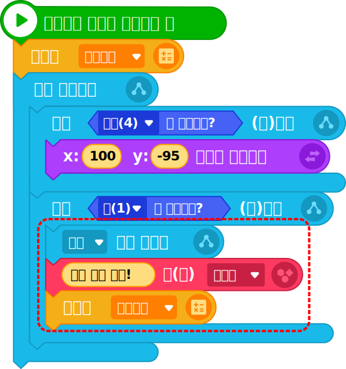

3디버깅하기
오류가 발생한 이유를 찾고, 잘못된 곳을 바르게 동작하도록 수정해 보자.
오류 사항 1
늑대가 미로 밖에 나타난다.
| 오브젝트 | 명령 블록 |
|---|---|

|
Tip
미로가 자리잡은 영역의 범위를 x 좌표는 -170~170, y 좌표는 -120~70이라고 가정하고,
늑대가 미로 안쪽에서 이동하도록 좌표를 정해 준다.
오류 사항 2
아기 양이 집에 도착해도 초시계가 멈추지 않고, 말풍선이 나타나지 않는다.
| 오브젝트 | 명령 블록 |
|---|---|
|  |  |
Tip
※ 비슷하게 동작하는 늑대 인간 오브젝트의 코드를 확인해 보며 다른 점을 찾아보자.